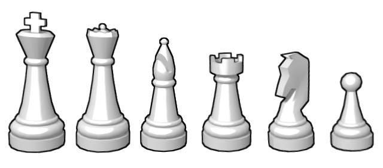

Leírása
A sakkjátékot két játékos játssza egymás ellen a négyzet alakú, nyolc sorra és nyolc oszlopra felosztott sakktáblán, 16–16, azaz összesen 32 bábuval. A két játékos bábui határozottan eltérő színűek. A színek elnevezése világos, illetve sötét. Köznapi értelemben véve a sötét játékos bábui fekete színűek, míg a világoséi általában fehérek vagy világosbarnák (utóbbi főleg akkor, ha a bábukat fából készítették). A játékosok felváltva lépnek, és mindkettejük célja, hogy a másik fél király figuráját a játékszabályok szerint bemattolják (azaz megtámadják, mégpedig úgy, hogy a támadást ne tudja elhárítani).
A sakk tábla
A tábla mindig akkor áll helyesen, ha a bal alsó sarokban sötét, a jobb alsóban pedig világos színű mező van. Vízszintesen az 1-től 8-ig, arab számokkal jelölt sorok, függőlegesen az a–h betűkkel azonosított vonalak vannak. Magán a sakktáblán többnyire nagybetűk láthatók, a játszmák lejegyzésénél kisbetűket írunk. A váltakozó színű négyzetek neve mező, és a vonalak, valamint sorok jelével hivatkozunk rájuk. A játékosok bal keze felé eső sarokmező sötét színű. A világossal játszó játékos esetén ez a mező az a1, sötétnél a h8. Alapállásban a világos király e1-en, a sötét király e8-on áll.

Az a–d vonalak neve vezérszárny, az e–h vonalaké királyszárny. A tábla közepe a centrum. Szűkebb értelemben ez csupán a d4, d5, e4 és e5 mezőket jelenti, tágabb értelemben centrumnak nevezzük a c3, c6, f6 és f3 mezők által kijelölt négyzetet. A sarkaikkal érintkező mezők képezik az átlókat. Az a1–h8, illetve az a8–h1 átlókat nagyátlóknak hívjuk.
Figurák és értékeik
A játék kezdetén a világosnak és a sötétnek ugyanannyi figurája van: 1–1 király, 1–1 vezér (alternatív neve: „királynő”), 2–2 bástya (alternatív neve: „torony”), 2–2 huszár (alternatív neve: „ló”), 2–2 futó és 8–8 gyalog (alternatív neve: „paraszt”). A figurák kiindulási helyzetét, illetve mozgatásuk lehetőségeit a játék szabálya határozza meg.
A 8–8 gyalogon és az 1–1 királyon kívül minden figura tiszt. A huszárt és a futót könnyűtisztnek, a vezért és a bástyát nehéztisztnek hívjuk. A kiindulási helyzetben elfoglalt helyük (királyszárny vagy vezérszárny) alapján szokás beszélni királybástyáról, vezérfutóról stb., ezek azonban nem hivatalos elnevezések. Azt a sort, amelyen alapállásban a tisztek és a király állnak (világos esetében az 1., sötét esetében a 8. sort) alapsornak hívjuk.
A figurák értékét egyrészt a lépéslehetőségeik, másrészt az adott állás határozzák meg. Egyszerűbb esetben szokás úgy becsülni, hogy egy gyalog 1 egységet ér, egy könnyűtiszt 3-at, egy bástya 5-öt, a vezér 9-et vagy 10-et. Eszerint általános érvénnyel lehet azt mondani, hogy a vezér erejét tekintve kb. két bástyával vagy három könnyűtiszttel egyenértékű. A konkrét helyzetben ezek az értékek azonban egészen szélsőségesen is változhatnak.